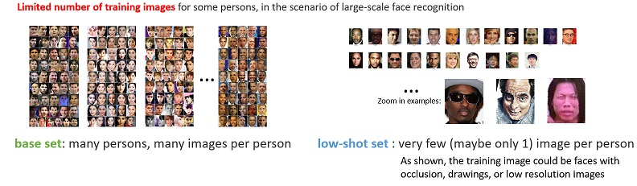

Low-shot Learning
Task Description: Know you at One Glance

Recognizing one million celebrities naturally introduces the low-shot learning problem since many celebrities only have limited number of images available for training. Though human visual intelligence has the ability to recognize novel objects from very few examples, low-shot learning with machines is still an open problem.
In this challenge, we investigate the problem of low-shot face recognition, with the goal to build a large-scale face recognizer capable of recognizing a substantial number of individuals with high precision and high recall. We create a benchmark dataset consisting of 21,000 persons each with 50-100 images of high accuracy ($>99%$). We divide this dataset into the following two sets,
-
Base set. There are 20,000 persons in the base set. Each person has 50-100 images for training, and about 5 images for testing.
-
Novel set. There are 1,000 persons in the novel set. Each person has 1-5 images for training, and 20 images for testing.
Our goal is to study when tens of images are given for each person in the base set while only one to five images are given for each person in the novel set, how to develop an algorithm to recognize the persons in both the data sets.
The base set is used to assist the learning of face recognition feature. Using a standard residual network with 34 layers with the base set, we have achieved a single model accuracy of 98.88%, comparable to the state of the art, on the LFW verification task.
Evaluation
Our measurement set contains a mixture of test images from both the base set and the novel set. We mainly focus on the classification performance with the test images in the novel set to evaluate how well the computer can learn novel visual concepts with limited number of training samples, while also monitor the performance on the base set to ensure that the performance gain on the novel set is not obtained by sacrificing the performance on the base set. A contesting system is asked to produce at least one prediction label with a confidence score per test image. To match with real scenarios, we measure the recognition coverage at a given precision 99%. That is, for N images in the measurement set, if an algorithm recognizes M images, among which C images are correct, we will calculate precision and recall as:
precision = C/M coverage = M/N
By varying the recognition confidence threshold, we can determine the coverage when the precision is at 99%. We rank the methods according to the coverage at the $99%$ precision with the test images in the novel set, while monitor the performance on the base set.
Note: Commercial/public intelligent services are not allowed to be called during the evaluation, e.g. Microsoft Cognitive Servcies, etc. We will detect and ban the contestants for this kind of behavior.